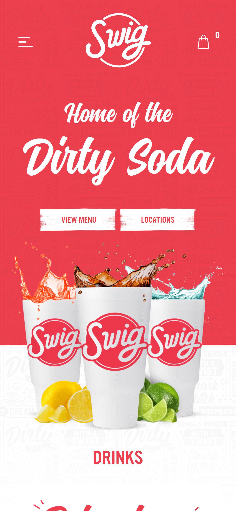
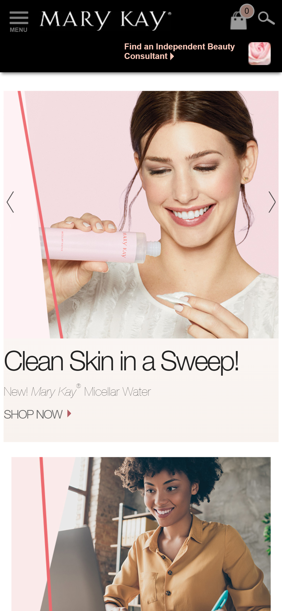

Alignment
Swig
This is a great example of alignment. The center alignment begins at the top of the page with the logo. As you scroll down, your focus is still in the center with the catch phrase, next the navigation buttons on down to the thirst quenching drinks.
Contrast
Schoology
Schoology is a website that many school districts us as a tool for online learning. The colors they have chosen appeal to children. The blue background with white text is a great contrast. The text is readable because it jumps out of the blue background. The yellow of the next section lets the user know that this is a different subject. The use of a black font make the words stand out from the yellow. If they had used white text again then it would be harder to read. The pink used in the thumbnail draws your attention to it. Even though all of the colors used are contrasting they work well with each other.
White Space and Clean Design
Mary Kay
Mary Kay Cosmetics website has a clean design. Their design focus is to show their product and what it can do for your skin. This picture has the consumer showing how to use the product. They keep the background clean so it is not a distraction. They utlize white space in their text. The font is simple and readable creating a great user experience.